Computer Vision and Machine Learning Tools
Scrivener Export - Reformatting Needed!
This article is an export of a Scrivener document. It will definitely need at least some reformatting to work in Obsidian and MkDocs. Delete this note once the article's formatting has been fixed to some extent.
Python Virtual Environment Basics¶
Python Virtual Environment Basics
PyTorch¶
PyTorch
Accessing the Dall-E API¶
Accessing the Dall-E API
The OpenAI Dall-E machine learning based image generation toolset is now available to the public using a web-based API. This makes it possible to quickly create concept images from a simple text-based prompt input syntax.
Dall-E Resources
- Dall-E Website
- WSL - Dalle-E API Now Available in Public (Fusion Community Forum Thread)
- LinkedIn | Using OpenAI DALL·E With the Vonk Data Nodes in Fusion
A DALL-E demo of the "Girl with a Pearl Earring" painting shows the power of out-painting to extend the canvas larger on an image. In visual effects workflows, this approach would be a big help for digital matte painters who need to extend the border of a frame to provide padding for 2.5D centric pan and tile workflows.
Using OpenAI DALL·E With the Vonk Data Nodes in Fusion¶
Using OpenAI DALL·E With the Vonk Data Nodes in Fusion
Step 1. Account Registry¶
Step 1. Account Registry
Start by registering for an OpenAI account to get an API Key. This allows you to access Dall-E as a web service. You get $18 in credits with a new OpenAI account registry.
Step 2. API Key¶
Step 2. API Key
Click at the top right corner of the OpenAI webpage on your account name. Then select the menu entry labelled "View API Keys". On the API keys page select the "Create new secret key" option. This will generate a new API key.
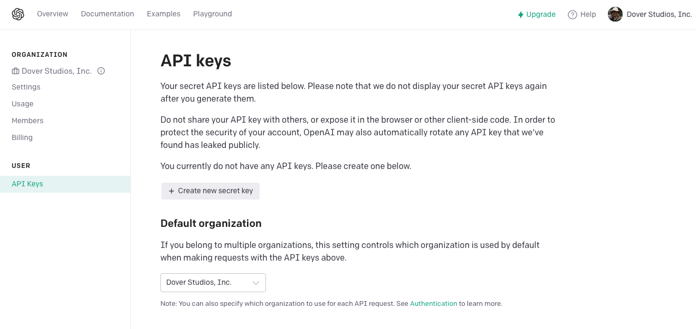
After you see the "API key generated" dialog, you will have to save a copy of this code somewhere for later use. This is important as the information is only displayed once in this dialog.
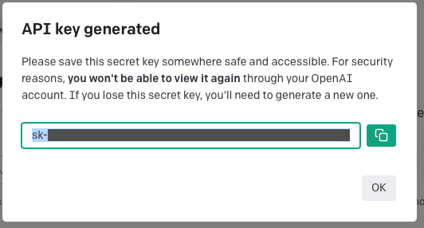
On the API Keys view you will see a reduced detail summary of each API key that is active for your account. You can delete old keys by clicking on the trash can icon.
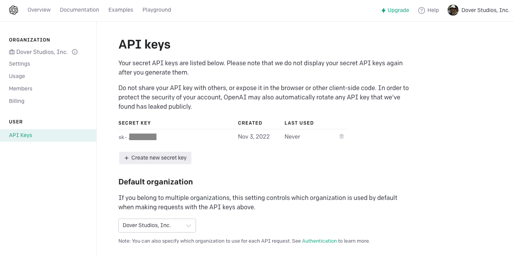
Step 3. Environment Variable¶
Step 3. Environment Variable
Create a new environment variable to hold the API key. Our environment variable will be named "OPENAI_API_KEY" and the variable will hold the contents of the API Key you created in step 2.
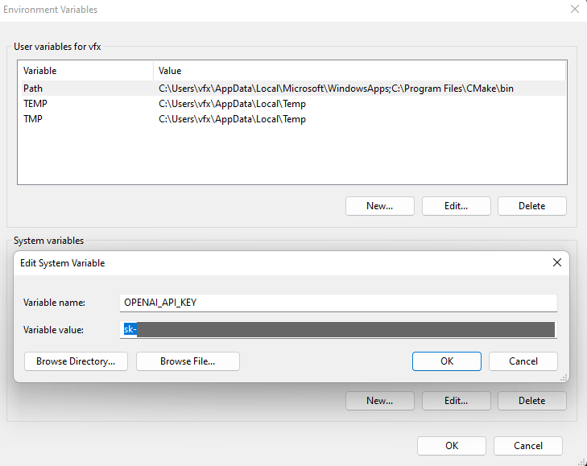
Step 4. Install Vonk¶
Step 4. Install Vonk
Install the "Vonk Ultra" atom package for Resolve/Fusion using the WSL Reactor Package Manager. Re-launch Resolve/Fusion once after installing Vonk to activate the new fuses.
Step 5. Explore the "Vonk Dall-E" Example Comp¶
Step 5. Explore the "Vonk Dall-E" Example Comp
Open the provided "Demo Vonk Dall-E.comp" example project in Fusion Studio.
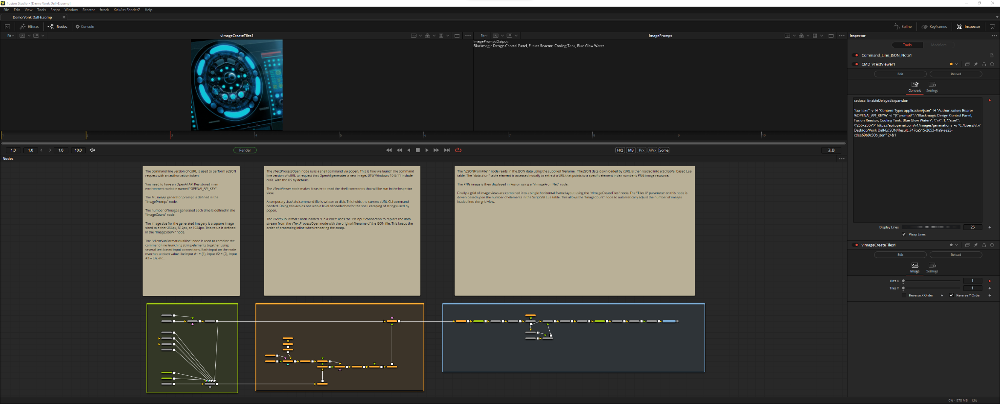
This example comp uses the sample image generation prompt text of "Blackmagic Design Control Panel, Fusion Reactor, Cooling Tank, Blue Glow Water".
Note: Performance optimizations for this example comp can be implemented in the future that will reduce unneeded Fusion pre-process requests. These are what cause re-downloads of the cURL JSON file to occur on the same frame. As usual, down the road all of this can be wrapped into a single neat-and-tidy fuse node that does all of the processing steps internally. :)
Common JSON Errors¶
Common JSON Errors
If an error occurs while generating the image, the technical information about the issue will be written into the JSON file. This allows you to troubleshoot problems and track down the source of the problem.
If you have a valid OpenAI API Key the most common JSON error for a free usage account will be:
{
"error": {
"code": null,
"message": "Rate limit reached for images per minute. Limit: 25/5min. Current: 27/5min. Please visit https://help.openai.com/en/articles/6696591 to learn how to increase your rate limit.",
"param": null,
"type": "requests"
}
}
If you do not have a valid API key then you will see a JSON error of:
{
"error": {
"message": "Incorrect API key provided: YOUR_API_KEY. You can find your API key at https://beta.openai.com.",
"type": "invalid_request_error",
"param": null,
"code": "invalid_api_key"
}
}
If you don't have anything typed into the prompt text-field (meaning the text field content is completely empty) you will see a JSON error of:
{
"error": {
"code": null,
"message": "You must provide a prompt.",
"param": null,
"type": "invalid_request_error"
}
}
If Dall-E could not understand the meaning of your prompt you will see a JSON error of:
{ "error": {
"code": null,
"message": "Something went wrong with your generation. You may try again or ask for a different prompt",
"param": null,
"type": "server_error"
}
}
If you hit into the Dall-E safety-rule limitations it means your prompt words are being censored. In those cases you will see an error like this message which was generated by having the words "COVID mask" as part of a prompt:
{
"error": {
"code": null,
"message": "Your request was rejected as a result of our safety system. Your prompt may contain text that is not allowed by our safety system.",
"param": null,
"type": "invalid_request_error"
}
}
Windows Command Prompt Test¶
Windows Command Prompt Test
If you want to do a test run of the cURL + OpenAI Key environment variable you can try running this cURL code directly in a command-prompt window:
"curl.exe" -v -H "Content-Type: application/json" -H "Authorization: Bearer %OPENAI_API_KEY%" -d "{\"prompt\": \"Blackmagic Design Control Panel, Fusion Reactor, Cooling Tank, Blue Glow Water\", \"n\": 1, \"size\": \"256x256\"}" https://api.openai.com/v1/images/generations
The JSON based request result you will get back looks like this:
{
"created": 1667534341,
"data": [
{
"url": "https://oaidalleapiprodscus.blob.core.windows.net/private/<snip>.png?st=2022-11-04T02%3A59%3A01Z&se=2022-11-04T04%3A59%3A01Z&sp=r&sv=2021-08-06&sr=b&rscd=inline&rsct=image/png&skoid=<snip>&skt=2022-11-04T00%3A59%3A13Z&ske=2022-11-05T00%3A59%3A13Z&sks=b&skv=2021-08-06&sig=<snip>"
}
]
}
When you copy the URL part of the text output from the command prompt window session into your Web browser's address bar, you will then see a new randomly created PNG image. With any luck it will look like something out of a futuristic SciFi movie with moody blue lighting in the results:
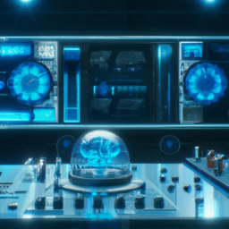
Comp Description (Download from the WSL Dall-E Thread)¶
Comp Description (Download from the WSL Dall-E Thread)
The command line version of cURL is used to perform a JSON request with an authorization token. You need to have an OpenAI API Key stored in an environment variable named "OPENAI_API_KEY".
The ML image generator prompt is defined in the "ImagePrompt" node. The number of images generated each time is defined in the "ImageCount" node. The image size for the generated imagery is a square image sized to either 256px, 512px, or 1024px. This value is defined in the "ImageSizePx" node.
The "vTextSubFormatMultiline" node is used to combine the command-line launching string elements together using several text based input connections. Each input on the node matches a token value like input #1 = {1}, input #2 = {2}, Input #3 = [3}, etc...
The vTextProcessOpen node runs a shell command via popen(). This is how we launch the command line version of cURL to request that OpenAI generates a new image. BTW Windows 10 & 11 include cURL with the OS by default. The vTextViewer node makes it easier to read the shell commands that will be run in the Inspector view.
A temporary .bat/.sh/.command file is written to disk. This holds the current cURL CLI command needed. Doing this avoids one whole level of headaches for the handling of nested quotation symbols in blocks of text used by "popen()".
The vTextSubFormat2 node named "LinkOrder" uses the 1st input connection to replace the data stream from the vTextProcessOpen node with the original filename of the JSON file. This keeps the order of processing inline when rendering the comp.
The "vJSONFromFile1" node reads in the JSON data using the supplied filename. The JSON data downloaded by cURL is then loaded into a ScriptVal based Lua table. The "data.#.url" table element is accessed nodally to extract a URL that points to a specific element index number's PNG image resource.
The PNG image is then displayed in Fusion using a "vImageFromNet" node.
Finally, a grid of image views are combined into a single horizontal frame layout using the "vImageCreateTiles" node.
The "Tiles X" parameter on this node is driven based upon the number of elements in the ScriptVal Lua table. This allows the "ImageCount" node to automatically adjust the number of images loaded into the grid view.
Rescuing Your vImageFromNet Temp Files¶
Rescuing Your vImageFromNet Temp Files
The "vImageFromNet" node caches a temporary file to disk for each download request that is processed. The cache location is the "Temp:/Vonk/" PathMap folder which is a directory that is automatically cleared by your operating system on restart.
This is a relevant tip if your latest interactive prompt creation and rendering session resulted in an amazing image being generated... that you are then having a hard time recreating later on. In this type of circumstance you may need to "fish out" that specific asset from the Dall-E processed temporary PNG image files in the cache directory.
If this is the case, you can quickly access this content using the "Script > Vonk Ultra > Open > Show Temp Folder" menu item.
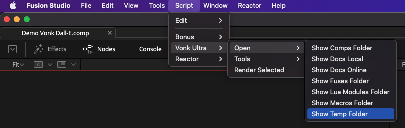
Dall-E for Fusion¶
Dall-E for Fusion
There is now a macro packaged version of the "Dall-E for Fusion" workflow. It bundles all of the Vonk nodes into a single GroupOperator that is streamlined with a minimalistic UI for artists to interact with.
Under the hood this macro uses the Base64 request format option to communicate with the Dall-E API's web service. This requires you to have the most recent version of Vonk Ultra (with the Base64 atom package) installed. :)
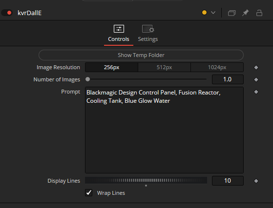
The "Image Resolution" control defines how large of an image is created. You can choose between "256px", "512px", or "1024px". This will generate either a "256x256 px", "512x512 px", or "1024x1024 px" sized image.
The "Number of Images" control specifies how many images are generated at a single time. These images are then accessible by advancing the Fusion timeline play head frame-by-frame.
The "Prompt" text field is where you enter your text to define what type of image content you want to have generated by Dall-E. Do not use quote symbols in this text-field. When entering text into the prompt, keep the content as a "single line" block of text without adding any newline characters, slashes or quote characters.
The "Show Temp Folder" button allows you to open the "Temp:/Vonk/Dall-E/" PathMap location on-disk. You can browse the cached images saved here if you need to recover a previously generated image.
Example Comp and Macro (Download from the WSL Dall-E Thread)¶
Example Comp and Macro (Download from the WSL Dall-E Thread)
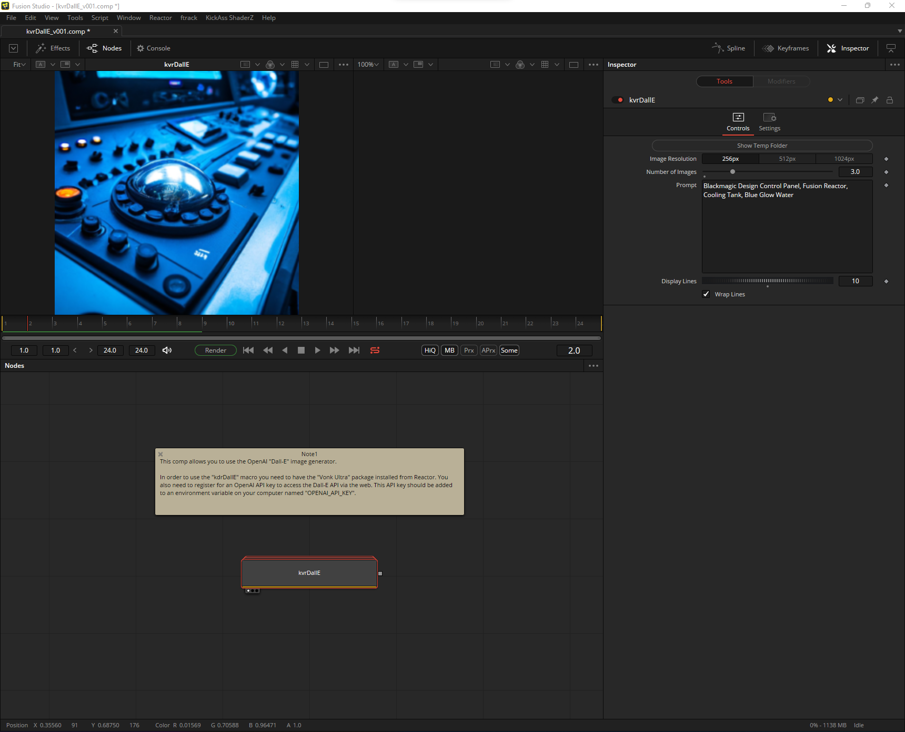
Description
This comp allows you to use the OpenAI "Dall-E" image generator.
In order to use the "kdrDallE" macro you need to have the "Vonk Ultra" package installed from Reactor. You also need to register for an OpenAI API key to access the Dall-E API via the web. This API key should be added to an environment variable on your computer named "OPENAI_API_KEY".
Note
I'm still refining the image caching functionality in the macro, especially when the Number of Images control is above 1.
For the next update I need to learn more from Dall-E's API docs on what their equivalent to a seed value is to see how stable of an output you can get within a short window of time with the exact same prompt request.
Accessing the Hugging Face API¶
Accessing the Hugging Face API
https://huggingface.co/inference-api
Stable Diffusion¶
Stable Diffusion
Stable Diffusion is an open-source machine learning based "AI" image generator created by StabilityAI. There is a web-based "DreamStudio" interface that can be explored. It is quite similar to MidjourneyAI and OpenAI's Dall-E technology.
For getting started quickly, Stable Diffusion's "DreamStudio" is an easy-to-use interface for creating images using the recently released Stable Diffusion image generation model. Stable Diffusion is a fast, efficient model for creating images from text which understands the relationships between words and images. It can create high quality images of anything you can imagine in seconds--just type in a text prompt and hit Dream. A safety filter is activated by default.
Already there is a Photoshop plugin, several Blender plugins, a Figma plugin, and a Krita plugin.
https://github.com/CompVis/stable-diffusion
Stable Diffusion for Fusion¶
Stable Diffusion for Fusion
A Fuse-based implementation of Stable Diffusion bindings are under development for Fusion. Currently this SD for Fusion effort is working on how best to package and deliver the required library dependencies to create a straightforward, easy to use experience for the end user.
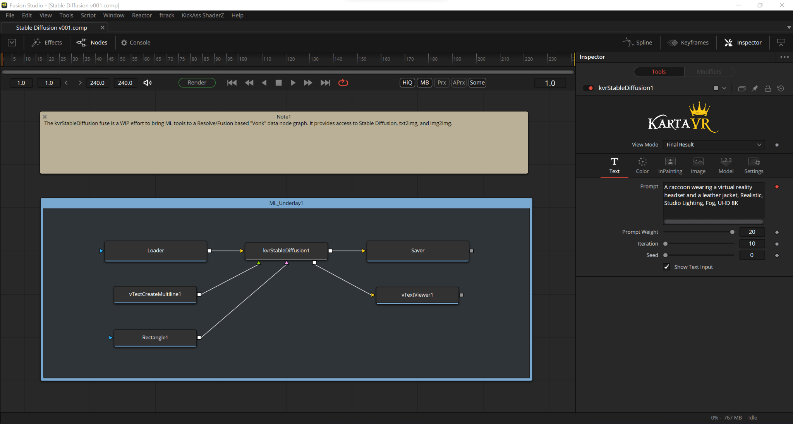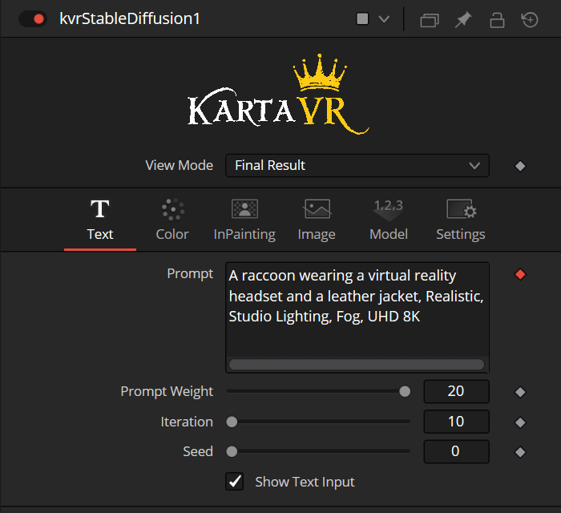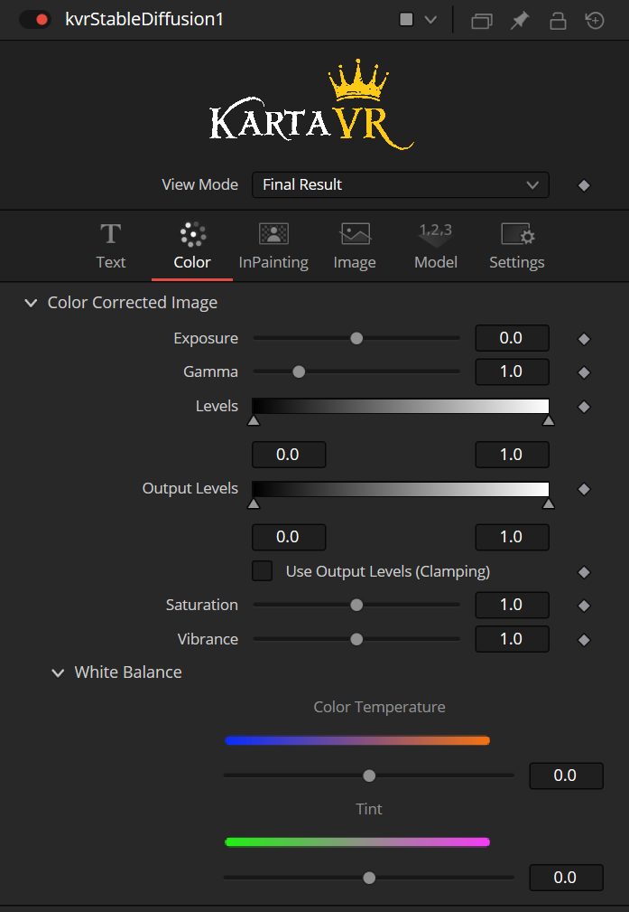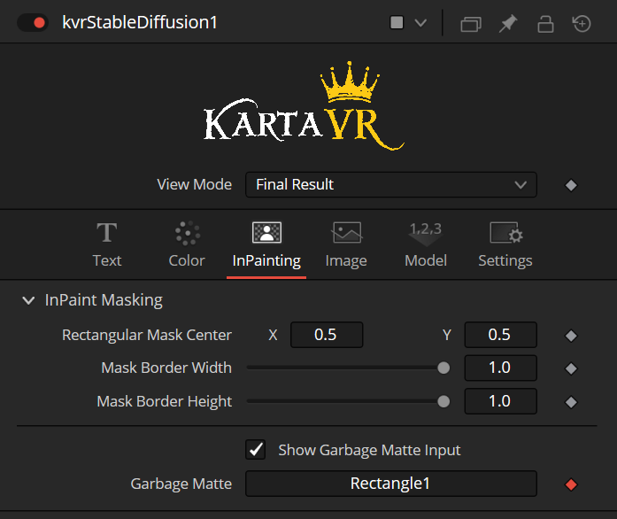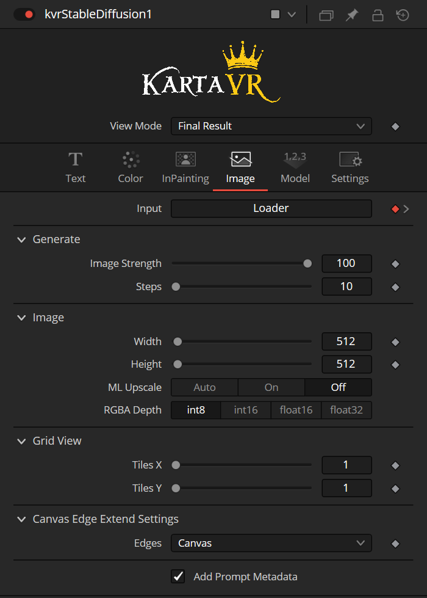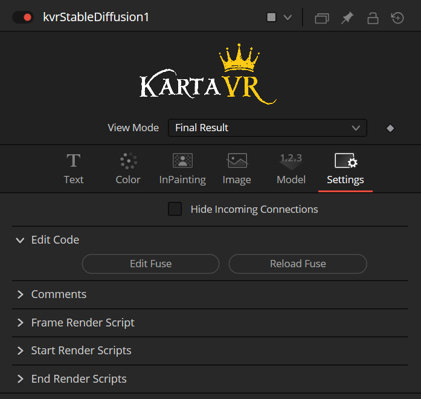
OpenCV¶
OpenCV
OpenCV is a popular open-source cross-platform compatible computer vision framework.
The OpenCV library makes it possible to carry out advanced image analysis with only a few lines of Python code.
GluonCV¶
GluonCV
Gluon makes it easy to perform common computer vision tasks like image classification, object segmentation and more. It is worth trying out even if you have never explored CV workflows beforehand.
GluonCV Resources:
Installing GluonCV for Windows
Step 1. Perform a base install of GluonCV via Python PIP Package Manager
REM Update Python pip package manager
python.exe -m pip install --upgrade pip
REM Nvidia driver 512.96
REM Cuda 11.7 is written below as "cu117" when adding mxnet
REM Add mxnet
pip install --upgrade mxnet-cu117
REM Add PyTorch
pip install torch==1.12.1 torchvision==0.7.0
REM Update GluonCV
pip install --upgrade gluoncv
Step 2. Start working your way through the GluonCV models and tutorials materials to get comfortable with the library.
OpenMMLab¶
OpenMMLab
MediaPipe¶
MediaPipe
FFMpeg¶
FFMpeg
FFMpeg is the ultimate command-line utility for working with video files. It is cross-platform compatible and open-source.
Imagemagick¶
Imagemagick
Imagemagick is a popular command-line image editing and conversion utility that is available for macOS, Linux, and Windows. In addition to the command-line based tools, there are versions of Imagemagick that can be used from inside scripting languages, or as a dynamic library that can be accessed from compiled programming languages.
Using Imagemagick to Burn in Text Overlays
Here is an Imagemagick shell scripting example that creates a desktop wallpaper image that has a text caption rendered from a text file named "desktop_caption.txt". The output is saved to an image named "Desktop.png":
#!/usr/bin/env bash
# Desktop Pattern Generator
echo "Desktop Pattern Generator"
HOST='R01'
IPADDRESS='10.20.30.1'
MACADDRESS='00:25:90:59:5b:16'
NETSPEED='1000T'
HARDDISK='70 GB HD / 34 GB Free'
OSVERSION='Ubuntu 14.04.05 LTS'
# Generate a text string and write it to disk
printf "${HOST} / ${IPADDRESS}\n${MACADDRESS} ${NETSPEED}\n${HARDDISK}\n${OSVERSION}"> $TMPDIR/desktop_caption.txt
# Create the rendered image from the text file
convert -size 320x100 -density 72 -pointsize 18 -interline-spacing 0 -background black -fill white -font Arial caption:@$TMPDIR/desktop_caption.txt "$HOME/Pictures/Desktop.png"
Using ImageMagick in 360VR workflows
The Dome2Rect GitHub repository includes a range of .bat shell scripts that use ImageMagick to edit and re-layout cubic panoramic images into different cubic image projections.
https://github.com/AndrewHazelden/dome2rect
EXIFTOOL¶
EXIFTOOL
The exiftool command-line utility is used to modify EXIF metadata tags in images. This tool allows a terminal (Linux/macOS) or command-prompt (Windows) based shell script to carry out batch operations of reading/writing/editing image metadata on a folder of images.
When you start writing your own pipeline tools for automating volumetric video or ML workflows, it can be useful to take the time to embed meaningful EXIF metadata into each of the images used in a project folder.
This is especially relevant if you are working with multi-view content, or need to convert dozens of movies into image sequences and want to add information into each file. The thing to remember with metadata is that when you do things correctly, those records will be passed down-stream to all the other tools in the pipeline, in a seamless manner.
Hugin Nona¶
Hugin Nona
The Hugin panoramic warping toolset includes the "nona" command-line utility. Nona uses the PanoTools "PTStitcher" scripting syntax to apply image projection and lens distortion correction operations.
For more information:
Enblend and Enfuse¶
Enblend and Enfuse
The Enblend command-line utility allows for seamless blending of multi-view images. A companion tool Enfuse allows for command-line based HDRI image bracket merging.
https://enblend.sourceforge.net/
For more information: